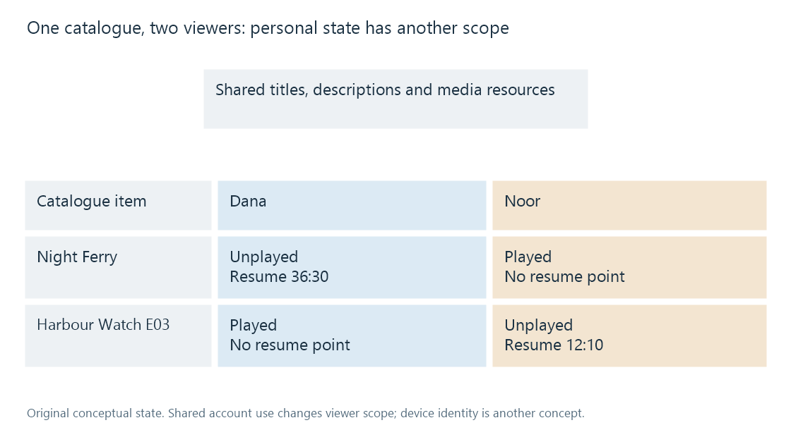

User-specific playback history
User-specific playback history relates viewing state to a viewer and media identity while shared catalogue descriptions remain separate.
A movie's title and runtime describe the media. Its watched flag and resume position describe a viewer's relationship to that media. Two people can therefore browse the same catalogue item while seeing different progress.
Emby's item API can return user-context information, and its user-data operations include a user identity as well as an item identity. That is a separate scope from shared descriptive metadata.

The matrix is an original conceptual example. It does not specify Emby's database keys or every rule by which multiple versions share state.
A shared description, several personal states
| Change | Relevant scope |
|---|---|
| Correct the movie's original title | Catalogue description |
| Record Dana's stopping point | Dana's playback state for the relevant media |
| Record Noor's played classification | Noor's playback state |
| Replace the source with another cut | Resource/edition identity and any dependent state |
| Change the displayed sort order | A presentation preference or query |
A shared catalogue correction does not mean both users stopped at the same position. A personal played flag does not change the film's credits.
Resource and presentation grouping can also affect state scope. If several versions share a logical media identity or history association, selecting a different source need not create an independent personal history record. A different cut still presents the timeline correspondence problem, even when the work-level watched classification is shared.
The viewer is not the device
Using the same account on a television and a phone gives the server a common user context. Switching devices need not mean switching histories.
Conversely, two people using one account report into that shared context. The server sees the account association, not a guaranteed identification of the person holding the remote. A household can therefore observe progress changes caused by another person using the same login without any cross-account error.
The account model explains the scope; it does not promise that every offline or disconnected state change becomes immediately available elsewhere. A device can display cached state, and the server can retain an older point until a new report arrives.
Concurrent sessions need a state decision
Suppose Dana's television reports minute 42 of a movie while the phone still has an older session at minute 20. Accepting a later-arriving phone message blindly would move the apparent resume point backwards.
An application must decide how report/session context affects saved state. The public playback model includes session and source identifiers, but the field list does not completely define the server's conflict policy. The example identifies the problem rather than claiming how every Emby version resolves it.
This is also why an accumulated state record is not a complete session log. A last-played date and a current resume point can describe the latest retained state while leaving previous sessions unreconstructable.
Moving history requires two matches
A transfer between independent catalogues needs to establish:
- Which destination user represents the source viewer.
- Which destination media identity corresponds to the source item.
Matching only the movie title leaves ambiguity between works and editions. Matching only a source-server item ID assumes an identity that may have no meaning on the destination. Qualified provider IDs can help with work matching, while edition and timeline evidence remain necessary for resume values.
A played classification can sometimes be meaningfully transferred at work level. A position at 36:30 needs a corresponding timeline. The two state fields can therefore require different matching precision.